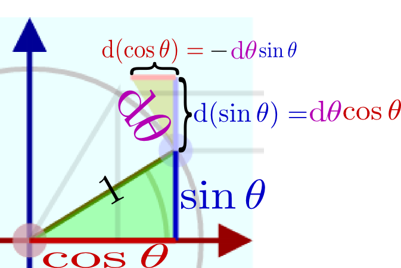
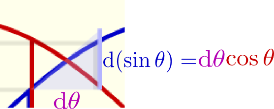

上の図は長さを描き込んだものである。θが変化したことによる「高さ」sinθの変化量であるd(sinθ)がdθ×cosθに等しいことが読み取れる。
右側のグラフはsinθ,cosθのグラフであるが、そちらにも、のように傾きが表示してある。この「傾き」が確かにcosθに比例していることを確認しよう。
動径の棒をドラッグして動かすことができるので、いろんな場合について確かにsinθの変化（増減）がcosθに比例していることを動かしながら実感して欲しい。